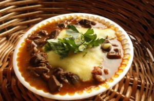

Angu

Angu
INGREDIENTES
- 2 litros de água fervente
- 500g de fubá
PORÇÕES
Serve: 15 pessoas
TEMPO DE PREPARO
40 minutos
PASSO A PASSO
- Dissolva o fubá em um pouco de água fria, mexendo com uma colher de pau.
- Junte a água fervente e, mexendo sem parar, em fogo alto.
- Quando a massa começar a grudar no fundo da panela, reduzir a chama e continuar a mexer até soltar do
fundo
da panela.
- Molhe uma forma e coloque o angu.
- Deixar esfriar um pouco e virá-lo numa travessa.